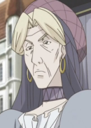

Yoshino Ootori or Miki Kagawa is a Japanese voice actress. Ootori is affiliated with Ken Production.
- Gender: Female
- Birthday: March 19, 1947
- Hometown: Yokohama, Kanagawa, Japan

| |
Yoshino Ootori or Miki Kagawa is a Japanese voice actress. Ootori is affiliated with Ken Production.
|
|---|
|  | Ariel | Romeo x Juliet | Ariel is present head of the noble Farnese family and mother of William de Farnese. She is old friend of Conrad and knows Juliet's secret. |
Go Back to Main Page |
Go Back to Homepage |
|
|
|
OR |
|